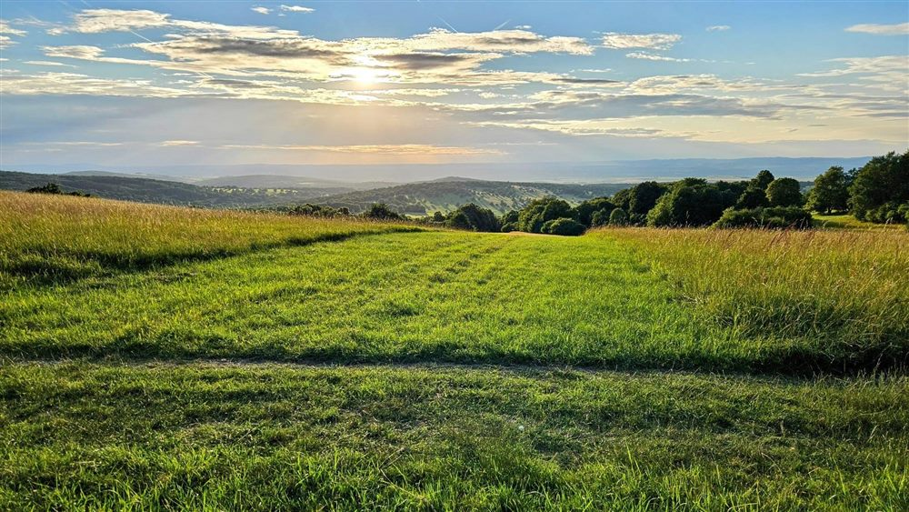

Čertoryje
Čertoryje a její Orchidejová naučná stezka patří k nejvýznamnějším lučním lokalitám českých Bílých Karpat. Rozkvétá tu mimořádné množství vstavačovitých rostlin – od vstavače vojenského po prstnatce a vemeníky. Tato pestrost není náhoda: louky jsou po staletí šetrně koseny a spásány. Procházet se smí jen po značených cestách, přesná místa vzácných rostlin se veřejně nesdílí.